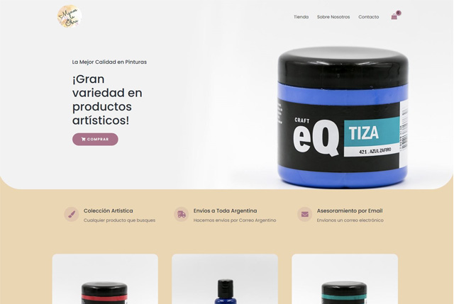
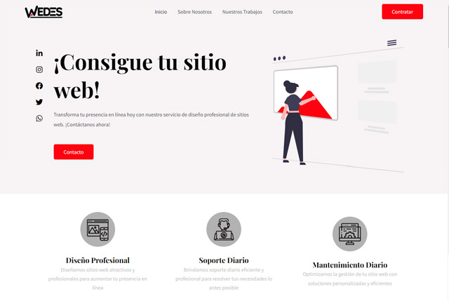
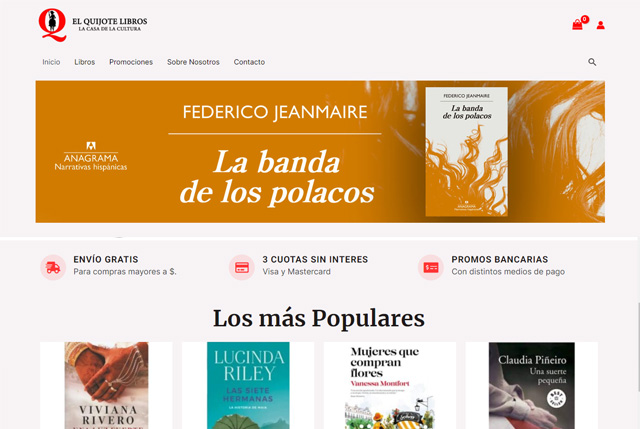
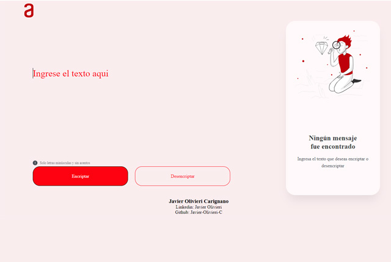
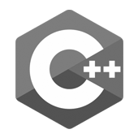

Acerca de Mí
Hola, soy Javier Olivieri, un desarrollador back end y diseñador web, estudiante de la carrera Ingeniería en Informática.
Mi trayectoria comenzó en el diseño front end, donde adquirí experiencia creando sitios web con WordPress y a medida que seguía investigando el mundo del desarrollo web, me adentré en el desarrollo back end. Creo que mi experiencia en front end me ha brindado una perspectiva única en lo que será mi trabajo de desarrollo back end.
Si estás interesado en trabajar conmigo o contratarme, puedes contactarme a través de mi correo electrónico o mis redes sociales.
¡Estoy emocionado de que creemos las aplicaciones del futuro!
Portafolio




Conocimientos
